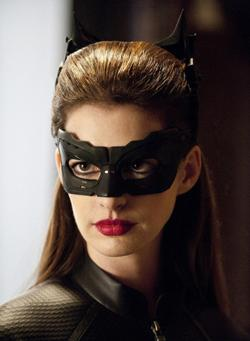

BATMAN
Bruce Wayne es el único personaje que se identifica como Batman y aparece en Batman, Detective Comics, Batman y Robin, y Batman: The Dark Knight. Dick Grayson vuelve al manto de Nightwing.


HARLEY QUINN
La creación de Harley Quinn fue una idea de último minuto propuesta por el escritor estadounidense Paul Dini para modificar una escena del vigésimo-segundo episodio de Batman: la serie animada.

GATUBELA
Es el alias de Selina Kyle, una ladrona de guante blanco moralmente reformada, con una relación romántica de idas y venidas con Batman. Se muestra como una mujer tenaz, independiente, y muy conflictiva con su pasado.